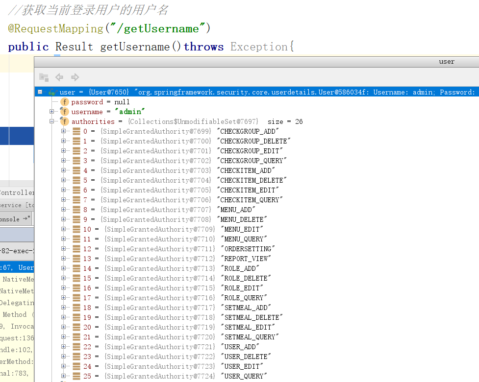
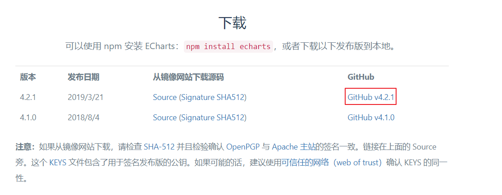
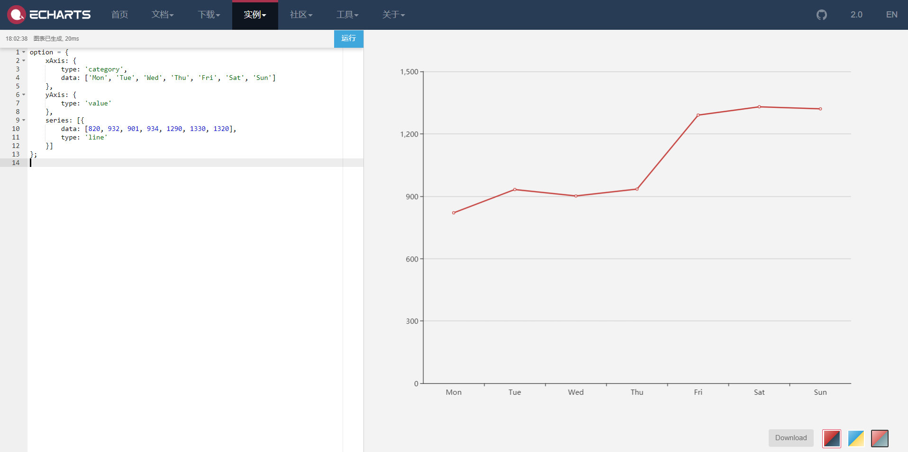

第10章 权限控制、图形报表
1. 在项目中应用Spring Security
前面我们已经学习了Spring Security框架的使用方法，本章节我们就需要将Spring Security框架应用到后台系统中进行权限控制，其本质就是认证和授权。
要进行认证和授权需要前面课程中提到的权限模型涉及的7张表支撑，因为用户信息、权限信息、菜单信息、角色信息、关联信息等都保存在这7张表中，也就是这些表中的数据是我们进行认证和授权的依据。所以在真正进行认证和授权之前需要对这些数据进行管理，即我们需要开发如下一些功能：
1、权限数据管理（增删改查）
2、菜单数据管理（增删改查）
3、角色数据管理（增删改查、角色关联权限、角色关联菜单）
4、用户数据管理（增删改查、用户关联角色）
鉴于时间关系，我们不再实现这些数据管理的代码开发。我们可以直接将数据导入到数据库中即可。
1.1 导入Spring Security环境
第一步：在health_parent父工程的pom.xml中导入Spring Security的maven坐标
<dependency> <groupId>org.springframework.security</groupId> <artifactId>spring-security-web</artifactId> <version>${spring.security.version}</version></dependency><dependency> <groupId>org.springframework.security</groupId> <artifactId>spring-security-config</artifactId> <version>${spring.security.version}</version></dependency>第二步：在health_backend工程的web.xml文件中配置用于整合Spring Security框架的过滤器DelegatingFilterProxy
xxxxxxxxxx<!--委派过滤器，用于整合其他框架--><filter> <!--整合spring security时，此过滤器的名称固定springSecurityFilterChain--> <filter-name>springSecurityFilterChain</filter-name> <filter-class>org.springframework.web.filter.DelegatingFilterProxy</filter-class></filter><filter-mapping> <filter-name>springSecurityFilterChain</filter-name> <url-pattern>/*</url-pattern></filter-mapping>1.2 实现认证和授权
第一步：在health_backend工程中按照Spring Security框架要求提供SpringSecurityUserService，并且实现UserDetailsService接口
xpackage com.itheima.security;import com.alibaba.dubbo.config.annotation.Reference;import com.itheima.pojo.CheckItem;import com.itheima.pojo.Permission;import com.itheima.pojo.Role;import com.itheima.service.CheckItemService;import com.itheima.service.UserService;import org.springframework.security.core.GrantedAuthority;import org.springframework.security.core.authority.SimpleGrantedAuthority;import org.springframework.security.core.userdetails.User;import org.springframework.security.core.userdetails.UserDetails;import org.springframework.security.core.userdetails.UserDetailsService;import org.springframework.security.core.userdetails.UsernameNotFoundException;import org.springframework.stereotype.Component;import java.util.ArrayList;import java.util.List;import java.util.Set;public class SpringSecurityUserService implements UserDetailsService{ //注意：此处要通过dubbo远程调用用户服务 private UserService userService; //根据用户名查询用户信息 public UserDetails loadUserByUsername(String username) throws UsernameNotFoundException { //远程调用用户服务，根据用户名查询用户信息 com.itheima.pojo.User user = userService.findByUsername(username); if(user == null){ //用户名不存在 return null; } List<GrantedAuthority> list = new ArrayList<>(); Set<Role> roles = user.getRoles(); for(Role role : roles){ //授予角色 list.add(new SimpleGrantedAuthority(role.getKeyword())); Set<Permission> permissions = role.getPermissions(); for(Permission permission : permissions){ //授权 list.add(new SimpleGrantedAuthority(permission.getKeyword())); } } UserDetails userDetails = new User(username,user.getPassword(),list); return userDetails; }}第二步：创建UserService服务接口、服务实现类、Dao接口、Mapper映射文件等
xxxxxxxxxxpackage com.itheima.service;import com.itheima.pojo.User;/** * 用户服务接口 */public interface UserService { public User findByUsername(String username);}xxxxxxxxxxpackage com.itheima.service;import com.alibaba.dubbo.config.annotation.Service;import com.itheima.dao.PermissionDao;import com.itheima.dao.RoleDao;import com.itheima.dao.UserDao;import com.itheima.pojo.Permission;import com.itheima.pojo.Role;import com.itheima.pojo.User;import org.springframework.beans.factory.annotation.Autowired;import org.springframework.transaction.annotation.Transactional;import java.util.Set;(interfaceClass = UserService.class)public class UserServiceImpl implements UserService { private UserDao userDao; private RoleDao roleDao; private PermissionDao permissionDao; public User findByUsername(String username) { User user = userDao.findByUsername(username); if(user == null){ return null; } Integer userId = user.getId(); Set<Role> roles = roleDao.findByUserId(userId); if(roles != null && roles.size() > 0){ for(Role role : roles){ Integer roleId = role.getId(); Set<Permission> permissions = permissionDao.findByRoleId(roleId); if(permissions != null && permissions.size() > 0){ role.setPermissions(permissions); } } user.setRoles(roles); } return user; }}xxxxxxxxxxpackage com.itheima.dao;import com.itheima.pojo.User;public interface UserDao { public User findByUsername(String username);}xxxxxxxxxxpackage com.itheima.dao;import com.itheima.pojo.Role;import java.util.Set;public interface RoleDao { public Set<Role> findByUserId(int id);}xxxxxxxxxxpackage com.itheima.dao;import com.itheima.pojo.Permission;import java.util.Set;public interface PermissionDao { public Set<Permission> findByRoleId(int roleId);}xxxxxxxxxx <mapper namespace="com.itheima.dao.UserDao" > <select id="findByUsername" parameterType="string" resultType="com.itheima.pojo.User"> select * from t_user where username = #{username} </select></mapper>xxxxxxxxxx <mapper namespace="com.itheima.dao.RoleDao" > <select id="findByUserId" parameterType="int" resultType="com.itheima.pojo.Role"> select r.* from t_role r ,t_user_role ur where r.id = ur.role_id and ur.user_id = #{userId} </select></mapper>xxxxxxxxxx <mapper namespace="com.itheima.dao.PermissionDao" > <select id="findByRoleId" parameterType="int" resultType="com.itheima.pojo.Permission"> select p.* from t_permission p ,t_role_permission rp where p.id = rp.permission_id and rp.role_id = #{roleId} </select></mapper>第三步：修改health_backend工程中的springmvc.xml文件，修改dubbo批量扫描的包路径
xxxxxxxxxx<!--批量扫描--><dubbo:annotation package="com.itheima" />注意：此处原来扫描的包为com.itheima.controller，现在改为com.itheima包的目的是需要将我们上面定义的SpringSecurityUserService也扫描到，因为在SpringSecurityUserService的loadUserByUsername方法中需要通过dubbo远程调用名称为UserService的服务。
第四步：在health_backend工程中提供spring-security.xml配置文件
xxxxxxxxxx <beans xmlns="http://www.springframework.org/schema/beans" xmlns:xsi="http://www.w3.org/2001/XMLSchema-instance" xmlns:context="http://www.springframework.org/schema/context" xmlns:dubbo="http://code.alibabatech.com/schema/dubbo" xmlns:mvc="http://www.springframework.org/schema/mvc" xmlns:security="http://www.springframework.org/schema/security" xsi:schemaLocation="http://www.springframework.org/schema/beans http://www.springframework.org/schema/beans/spring-beans.xsd http://www.springframework.org/schema/mvc http://www.springframework.org/schema/mvc/spring-mvc.xsd http://code.alibabatech.com/schema/dubbo http://code.alibabatech.com/schema/dubbo/dubbo.xsd http://www.springframework.org/schema/context http://www.springframework.org/schema/context/spring-context.xsd http://www.springframework.org/schema/security http://www.springframework.org/schema/security/spring-security.xsd"> <!-- http：用于定义相关权限控制 指定哪些资源不需要进行权限校验，可以使用通配符 --> <security:http security="none" pattern="/js/**" /> <security:http security="none" pattern="/css/**" /> <security:http security="none" pattern="/img/**" /> <security:http security="none" pattern="/plugins/**" /> <!-- http：用于定义相关权限控制 auto-config：是否自动配置 设置为true时框架会提供默认的一些配置，例如提供默认的登录页面、登出处理等 设置为false时需要显示提供登录表单配置，否则会报错 use-expressions：用于指定intercept-url中的access属性是否使用表达式 --> <security:http auto-config="true" use-expressions="true"> <security:headers> <!--设置在页面可以通过iframe访问受保护的页面，默认为不允许访问--> <security:frame-options policy="SAMEORIGIN"></security:frame-options> </security:headers> <!-- intercept-url：定义一个拦截规则 pattern：对哪些url进行权限控制 access：在请求对应的URL时需要什么权限，默认配置时它应该是一个以逗号分隔的角色列表， 请求的用户只需拥有其中的一个角色就能成功访问对应的URL isAuthenticated()：已经经过认证（不是匿名用户） --> <security:intercept-url pattern="/pages/**" access="isAuthenticated()" /> <!--form-login：定义表单登录信息--> <security:form-login login-page="/login.html" username-parameter="username" password-parameter="password" login-processing-url="/login.do" default-target-url="/pages/main.html" always-use-default-target="true" authentication-failure-url="/login.html" /> <!-- csrf：对应CsrfFilter过滤器 disabled：是否启用CsrfFilter过滤器，如果使用自定义登录页面需要关闭此项， 否则登录操作会被禁用（403） --> <security:csrf disabled="true"></security:csrf> </security:http> <!--配置密码加密对象--> <bean id="passwordEncoder" class="org.springframework.security.crypto.bcrypt.BCryptPasswordEncoder" /> <!--认证管理器，用于处理认证操作--> <security:authentication-manager> <!--认证提供者，执行具体的认证逻辑--> <security:authentication-provider user-service-ref="springSecurityUserService"> <!--指定密码加密策略--> <security:password-encoder ref="passwordEncoder" /> </security:authentication-provider> </security:authentication-manager> <!--开启注解方式权限控制--> <security:global-method-security pre-post-annotations="enabled" /></beans>第五步：在springmvc.xml文件中引入spring-security.xml文件
xxxxxxxxxx<import resource="spring-security.xml"></import>第六步：在Controller的方法上加入权限控制注解，此处以CheckItemController为例
xxxxxxxxxxpackage com.itheima.controller;import com.alibaba.dubbo.config.annotation.Reference;import com.itheima.constant.MessageConstant;import com.itheima.constant.PermissionConstant;import com.itheima.entity.PageResult;import com.itheima.entity.QueryPageBean;import com.itheima.entity.Result;import com.itheima.exception.CustomException;import com.itheima.pojo.CheckItem;import com.itheima.pojo.Member;import com.itheima.service.CheckItemService;import org.springframework.security.access.annotation.Secured;import org.springframework.security.access.prepost.PreAuthorize;import org.springframework.web.bind.annotation.RequestBody;import org.springframework.web.bind.annotation.RequestMapping;import org.springframework.web.bind.annotation.RequestParam;import org.springframework.web.bind.annotation.RestController;import org.springframework.web.multipart.commons.CommonsMultipartFile;import java.util.List;/** * 体检检查项管理 */("/checkitem")public class CheckItemController { private CheckItemService checkItemService; //分页查询 ("hasAuthority('CHECKITEM_QUERY')")//权限校验 ("/findPage") public PageResult findPage( QueryPageBean queryPageBean){ PageResult pageResult = checkItemService.pageQuery( queryPageBean.getCurrentPage(), queryPageBean.getPageSize(), queryPageBean.getQueryString()); return pageResult; } //删除 ("hasAuthority('CHECKITEM_DELETE')")//权限校验 ("/delete") public Result delete(Integer id){ try { checkItemService.delete(id); }catch (RuntimeException e){ return new Result(false,e.getMessage()); }catch (Exception e){ return new Result(false, MessageConstant.DELETE_CHECKITEM_FAIL); } return new Result(true,MessageConstant.DELETE_CHECKITEM_SUCCESS); } //新增 ("hasAuthority('CHECKITEM_ADD')")//权限校验 ("/add") public Result add( CheckItem checkItem){ try { checkItemService.add(checkItem); }catch (Exception e){ return new Result(false,MessageConstant.ADD_CHECKITEM_FAIL); } return new Result(true,MessageConstant.ADD_CHECKITEM_SUCCESS); } //编辑 ("hasAuthority('CHECKITEM_EDIT')")//权限校验 ("/edit") public Result edit( CheckItem checkItem){ try { checkItemService.edit(checkItem); }catch (Exception e){ return new Result(false,MessageConstant.EDIT_CHECKITEM_FAIL); } return new Result(true,MessageConstant.EDIT_CHECKITEM_SUCCESS); }}第七步：修改页面，没有权限时提示信息设置，此处以checkitem.html中的handleDelete方法为例
xxxxxxxxxx//权限不足提示showMessage(r){ if(r == 'Error: Request failed with status code 403'){ //权限不足 this.$message.error('无访问权限'); return; }else{ this.$message.error('未知错误'); return; }}xxxxxxxxxx// 删除handleDelete(row) { this.$confirm('此操作将永久当前数据，是否继续?', '提示', { type: 'warning' }).then(()=>{ //点击确定按钮执行此代码 axios.get("/checkitem/delete.do?id=" + row.id).then((res)=> { if(!res.data.flag){ //删除失败 this.$message.error(res.data.message); }else{ //删除成功 this.$message({ message: res.data.message, type: 'success' }); this.findPage(); } }).catch((r)=>{ this.showMessage(r); }); }).catch(()=> { //点击取消按钮执行此代码 this.$message('操作已取消'); });}1.3 显示用户名
前面我们已经完成了认证和授权操作，如果用户认证成功后需要在页面展示当前用户的用户名。Spring Security在认证成功后会将用户信息保存到框架提供的上下文对象中，所以此处我们就可以调用Spring Security框架提供的API获取当前用户的username并展示到页面上。
实现步骤：
第一步：在main.html页面中修改，定义username模型数据基于VUE的数据绑定展示用户名，发送ajax请求获取username
xxxxxxxxxx<script> new Vue({ el: '#app', data:{ username:null,//用户名 menuList:[] }, created(){ //发送请求获取当前登录用户的用户名 axios.get('/user/getUsername.do').then((response)=>{ this.username = response.data.data; }); } });</script>xxxxxxxxxx<div class="avatar-wrapper"> <img src="../img/user2-160x160.jpg" class="user-avatar"> <!--展示用户名--> {{username}}</div>第二步：创建UserController并提供getUsername方法
xxxxxxxxxxpackage com.itheima.controller;import com.itheima.constant.MessageConstant;import com.itheima.entity.Result;import org.springframework.security.core.context.SecurityContextHolder;import org.springframework.security.core.context.SecurityContextImpl;import org.springframework.web.bind.annotation.RequestMapping;import org.springframework.web.bind.annotation.RestController;("/user")public class UserController { //获取当前登录用户的用户名 ("/getUsername") public Result getUsername()throws Exception{ try{ org.springframework.security.core.userdetails.User user = (org.springframework.security.core.userdetails.User) SecurityContextHolder.getContext().getAuthentication().getPrincipal(); return new Result(true, MessageConstant.GET_USERNAME_SUCCESS,user.getUsername()); }catch (Exception e){ return new Result(false, MessageConstant.GET_USERNAME_FAIL); } }}通过debug调试可以看到Spring Security框架在其上下文中保存的用户相关信息：

1.4 用户退出
第一步：在main.html中提供的退出菜单上加入超链接
xxxxxxxxxx<el-dropdown-item divided> <span style="display:block;"><a href="/logout.do">退出</a></span></el-dropdown-item>第二步：在spring-security.xml文件中配置
xxxxxxxxxx<!-- logout：退出登录 logout-url：退出登录操作对应的请求路径 logout-success-url：退出登录后的跳转页面--><security:logout logout-url="/logout.do" logout-success-url="/login.html" invalidate-session="true"/>2. 图形报表ECharts
2.1 ECharts简介
ECharts缩写来自Enterprise Charts，商业级数据图表，是百度的一个开源的使用JavaScript实现的数据可视化工具，可以流畅的运行在 PC 和移动设备上，兼容当前绝大部分浏览器（IE8/9/10/11，Chrome，Firefox，Safari等），底层依赖轻量级的矢量图形库 ZRender，提供直观、交互丰富、可高度个性化定制的数据可视化图表。
下载地址：https://echarts.baidu.com/download.html

下载完成可以得到如下文件：

解压上面的zip文件：

我们只需要将dist目录下的echarts.js文件引入到页面上就可以使用了

2.2 5分钟上手ECharts
我们可以参考官方提供的5分钟上手ECharts文档感受一下ECharts的使用方式，地址如下：
https://www.echartsjs.com/tutorial.html#5%20%E5%88%86%E9%92%9F%E4%B8%8A%E6%89%8B%20ECharts
第一步：创建html页面并引入echarts.js文件
xxxxxxxxxx<html><head> <meta charset="utf-8"> <!-- 引入 ECharts 文件 --> <script src="echarts.js"></script></head></html>第二步：在页面中准备一个具备宽高的DOM容器。
xxxxxxxxxx<body> <!-- 为 ECharts 准备一个具备大小（宽高）的 DOM --> <div id="main" style="width: 600px;height:400px;"></div></body>第三步：通过echarts.init方法初始化一个 echarts 实例并通过setOption方法生成一个简单的柱状图
xxxxxxxxxx<script type="text/javascript"> // 基于准备好的dom，初始化echarts实例 var myChart = echarts.init(document.getElementById('main')); // 指定图表的配置项和数据 var option = { title: { text: 'ECharts 入门示例' }, tooltip: {}, legend: { data:['销量'] }, xAxis: { data: ["衬衫","羊毛衫","雪纺衫","裤子","高跟鞋","袜子"] }, yAxis: {}, series: [{ name: '销量', type: 'bar', data: [5, 20, 36, 10, 10, 20] }]};// 使用刚指定的配置项和数据显示图表。myChart.setOption(option);</script>效果如下：

2.3 查看ECharts官方实例
ECharts提供了很多官方实例，我们可以通过这些官方实例来查看展示效果和使用方法。
官方实例地址：https://www.echartsjs.com/examples/

可以点击具体的一个图形会跳转到编辑页面，编辑页面左侧展示源码（js部分源码），右侧展示图表效果，如下：

要查看完整代码可以点击右下角的Download按钮将完整页面下载到本地。
通过官方案例我们可以发现，使用ECharts展示图表效果，关键点在于确定此图表所需的数据格式，然后按照此数据格式提供数据就可以了，我们无须关注效果是如何渲染出来的。
在实际应用中，我们要展示的数据往往存储在数据库中，所以我们可以发送ajax请求获取数据库中的数据并转为图表所需的数据即可。
3. 会员数量折线图
3.1 需求分析
会员信息是体检机构的核心数据，其会员数量和增长数量可以反映出机构的部分运营情况。通过折线图可以直观的反映出会员数量的增长趋势。本章节我们需要展示过去一年时间内每个月的会员总数据量。展示效果如下图：

3.2 完善页面
会员数量折线图对应的页面为/pages/report_member.html。
3.2.1 导入ECharts库
第一步：将echarts.js文件复制到health_backend工程的plugins目录下
第二步：在report_member.html页面引入echarts.js文件
xxxxxxxxxx<script src="../plugins/echarts/echarts.js"></script>3.2.2 参照官方实例导入折线图
xxxxxxxxxx<div class="box"> <!-- 为 ECharts 准备一个具备大小（宽高）的 DOM --> <div id="chart1" style="height:600px;"></div></div>xxxxxxxxxx<script type="text/javascript"> // 基于准备好的dom，初始化echarts实例 var myChart1 = echarts.init(document.getElementById('chart1')); //发送ajax请求获取动态数据 axios.get("/report/getMemberReport.do").then((res)=>{ myChart1.setOption( { title: { text: '会员数量' }, tooltip: {}, legend: { data:['会员数量'] }, xAxis: { data: res.data.data.months }, yAxis: { type:'value' }, series: [{ name: '会员数量', type: 'line', data: res.data.data.memberCount }] }); });</script>根据折线图对数据格式的要求，我们发送ajax请求，服务端需要返回如下格式的数据：
xxxxxxxxxx{ "data":{ "months":["2019.01","2019.02","2019.03","2019.04"], "memberCount":[3,4,8,10] }, "flag":true, "message":"获取会员统计数据成功"}3.3 后台代码
3.3.1 Controller
在health_backend工程中创建ReportController并提供getMemberReport方法
xxxxxxxxxxpackage com.itheima.controller;import com.alibaba.dubbo.config.annotation.Reference;import com.itheima.constant.MessageConstant;import com.itheima.entity.Result;import com.itheima.pojo.Setmeal;import com.itheima.service.MemberService;import com.itheima.service.ReportService;import com.itheima.service.SetmealService;import com.itheima.utils.DateUtils;import org.apache.poi.xssf.usermodel.XSSFRow;import org.apache.poi.xssf.usermodel.XSSFSheet;import org.apache.poi.xssf.usermodel.XSSFWorkbook;import org.springframework.beans.factory.annotation.Autowired;import org.springframework.web.bind.annotation.RequestMapping;import org.springframework.web.bind.annotation.RestController;import javax.servlet.ServletOutputStream;import javax.servlet.http.HttpServletRequest;import javax.servlet.http.HttpServletResponse;import java.io.File;import java.io.FileInputStream;import java.io.FileOutputStream;import java.math.BigDecimal;import java.text.SimpleDateFormat;import java.util.*;/** * 统计报表 */("/report")public class ReportController { private MemberService memberService; /** * 会员数量统计 * @return */ ("/getMemberReport") public Result getMemberReport(){ Calendar calendar = Calendar.getInstance(); calendar.add(Calendar.MONTH,-12);//获得当前日期之前12个月的日期 List<String> list = new ArrayList<>(); for(int i=0;i<12;i++){ calendar.add(Calendar.MONTH,1); list.add(new SimpleDateFormat("yyyy.MM").format(calendar.getTime())); } Map<String,Object> map = new HashMap<>(); map.put("months",list); List<Integer> memberCount = memberService.findMemberCountByMonth(list); map.put("memberCount",memberCount); return new Result(true, MessageConstant.GET_MEMBER_NUMBER_REPORT_SUCCESS,map); }}3.3.2 服务接口
在MemberService服务接口中扩展方法findMemberCountByMonth
xxxxxxxxxxpublic List<Integer> findMemberCountByMonth(List<String> month);3.2.3 服务实现类
在MemberServiceImpl服务实现类中实现findMemberCountByMonth方法
xxxxxxxxxx//根据月份统计会员数量public List<Integer> findMemberCountByMonth(List<String> month) { List<Integer> list = new ArrayList<>(); for(String m : month){ m = m + ".31";//格式：2019.04.31 Integer count = memberDao.findMemberCountBeforeDate(m); list.add(count); } return list;}3.3.4 Dao接口
在MemberDao接口中扩展方法findMemberCountBeforeDate
xxxxxxxxxxpublic Integer findMemberCountBeforeDate(String date);3.3.5 Mapper映射文件
在MemberDao.xml映射文件中提供SQL语句
xxxxxxxxxx<!--根据日期统计会员数，统计指定日期之前的会员数--><select id="findMemberCountBeforeDate" parameterType="string" resultType="int"> select count(id) from t_member where regTime <= #{value}</select>